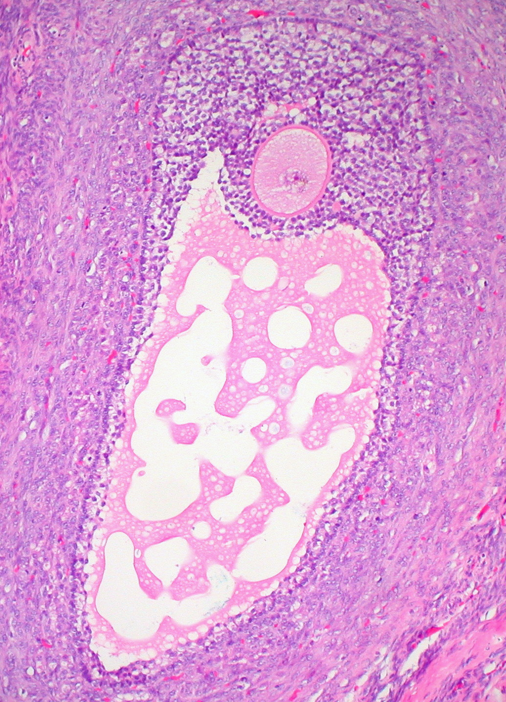
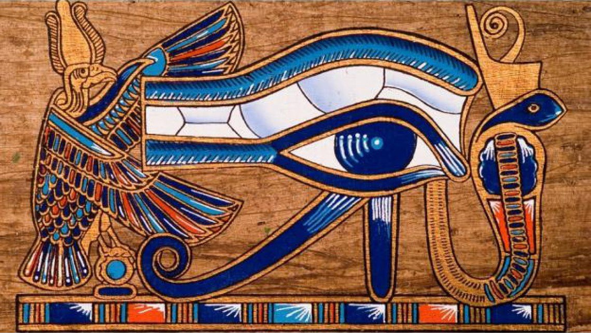

Ccru :: 两栖少女
两栖少女是Suzanne Livingstone, Luciana Parisi, Anna Greenspan三位女性学者1998年为Ccru写的一篇神秘文字。
Here they sketch an alternative temporality, alien to the sober advance of patriarchal time, in a loop that connects the menstruating female body to the iron core of the earth, drawing out an alliance between blood and metal
She produces an egg but not necessarily to reproduce. The egg is ambiguous, shot through by dual alliances [and] the effectiveness of a weapon.
…breeding ground of anorganic life … mark[ed by] the force of mitochondrial, non-meotic self-replication. The egg which she carries with her becomes the production unit of a new egg within which is contained further eggs. The infinite egg. Each repetition is the actualization of one of 400,000 possibilities.
——Amy Ireland, Black Circuit: Code for the Numbers to Come
译者：P1_&&y 原文：Amphibious Maidens
（第零日）战争之日
她从零重新开始她的身体性别。
一个作为无（nothing）出现的零
但她将把它作为密码拿在手里。女人根据与统治符号框架几乎不相称的模式来扩散自己。这不会不引起一些动荡，我们甚至可以说是一些旋风……(TS, 106)1
Minx，/min xs/ 名词，可数，活泼，机灵，俏皮的女孩。（Minx /min xs/ n. a. pert, sly, or playful girl. ）
妇女的不相容性是根据排除法编纂的。它产生了意想不到的后果。因为她隐秘的姿态、身体和喃喃自语已经从他的语言中溜走，无意中进入了战争机器的运作中。她的生存取决于他腐败版本的侵占的军事部署。
蛇形战术是她难以察觉的前进的计划。她通过地质切割、金属侵入、技术伤痕来标记她的路线。当这些伤口愈合的时候，训练有素的手指感受到的是结痂。与节节高升、镜面战争的战略相抗衡。
她是没有秘密的斯芬克斯。
看不到的沟通。
在屏幕上追踪不同的进展。
女性的英雄主义既不是来自于她例行的自我牺牲，也不是来自于她被迫占据一个超然的位置—-在国家之外，在理性之外—-而是来自于她沉浸在一个身体里。一个不以 “形式、器官或功能，也不以物质或主体 ”来定义的身体。(SPP，127)2
伊俄卡斯忒（Jocasta）和安提戈涅（Antigone）不是唯一的女性。在东方，在印度次大陆，迦利标志着一条不同的道路。这是对血肉（flesh）、肉体（meat）和切口表面的非秘密的、超身体的探索。不是身体应该做什么，而是身体能做什么。实验。找到身体。找到第三只眼。
迦利（Kali）就是从这只眼睛中诞生的，这只眼睛是她的武器。她诞生于她母亲额头正中的眼睛。一个被密封的、被撕裂的伤痕，从那里会溢出许多其他的伤痕。无法估量的入侵，这是一个女性必须时刻预料到的。现在的任何一面（Either side of the present）……感知未来。
她像每个女人一样，从战争女神杜尔迦那里学到了她的游戏，谜语，技巧。杜尔迦（Durga）用她的十只手臂以绝对的速度不动声色地和恶魔英雄们战斗着。她的每条手臂上都装备着：2条蛇、1面盾牌、1个刃壳、1个火把、2支箭、1支矛、1把弯刀。
液体湍流。
然而恶魔英雄们却坚持不懈。
当她感觉到滑动时她必须加强她的把握。迦利将注意力集中在眉间的位置，她调用了她最珍贵的秘密武器。她的第三只眼像圆盘一样在脑袋里移动，金属红色，她的第三只眼打开了。迦利诞生了，一场战争胜利了。
但还没有结束。对统治秩序的入侵是一个微观的特别策划的间歇。 她暗淡的长发发狂乱地飘着，她疯狂的笑声，她的第三只眼猩红，她贪婪的舌头，巨大坚硬的牙齿，她的嘴唇向后拉着，她的乳房被一串串断头的头颅装扮着，面容狂野而可怕。
她的花环是恶魔的肠子，她的装饰品是贪恋血肉的骨头。大地随着她的嚎叫而颤抖。她践踏着天堂、大地和地狱，把它们压在脚下。(SF，98)3
不知不觉中对准了有机体，对准了镜面凝视，爬行动物骚动起来。第三脑室，动物精神的家园，拆解了人类。藐视视线的盲目武器的残余事件。剩下的是她节奏的痕迹，她运动所涂抹出来的印记–平滑的滑行–水平线。一个由速度（speed）和迟缓（slowness）组成的节奏。
（第一日）血之日
在密宗所说的肉体中，第三只眼对应着位于大脑中的两个腺体–垂体和松果体。神经戏剧的前景和背景。女性周期性的不连续性，她对度量秩序的拒绝，来自于这两个腺体之间存在的各种反馈关系。从这些原始的生殖、荷尔蒙和历法的循环中，产生了机器化的感知、生成两栖，并通过大脑回溯。她的身体是陌生的领域。血液会被抽出。
menses /mensi:z/ 名词，复数。1月经时从子宫排出的血液和其他物质。2月经的周期。【L，mensis月的复数。】
战斗的残渣散落一地。战士们根据女性周期的下降趋势撤退。“小面积的功能层一次次脱落，子宫腺体排出其内容物并崩溃。血液、组织液、粘液和上皮细胞周期性地排出25-65毫升。在周期结束时，整个功能层已经脱落，只剩下基底层。”(PAP，901)4分层。
她流血的身体并非是代表损失了一个不成功的卵。这是她的线性时间性（temporality），她的节奏。
嗜血。
迦利接受了从她的信徒断头流出的血液。满足了女性对自己流动的渴求。
战斗的末尾是女性祭祀的时间。她引流到表面，看着它在太阳下变红。欲望的焦液不是男性幻觉的投影，而是女性身体的蜜汁。她将享受它的许多细流–它的血毒、血钱、血欲、放血、血线、血渍、血细胞和血石。红色，标志着第三只眼的色素，自巴比伦时代起，就成了妓女的颜色。她很懂得如何利用它。
这种炼金术、诱惑和水银浸染的毒素，是由色觉色素血红蛋白染红的。由四条多肽链和四种非蛋白色素组成，这种铁和氧的混合物被看到浮出表面。红血丝是金属。
身体是无机生命的孕育地。它的内部没有与环境封闭，它就像一个电导体，从地球的铁核中汲取能量。身体一直是后人类生命的金属集合体。她是流血的金属，是大地的铁。她的频率被调整到月球节奏的电磁学上，调整到地质褶皱上，调整到潮汐和洪荒之门上。她的血液会潮涨又潮落。
莉莉斯之夜14
到了晚上，按月球节律的时钟，女性身体拒绝生理制度，
在创世纪的故事线下，亚当的第一任妻子标明了逃跑的路线。莉莉丝拒绝在性交时采取适当的姿势。她把自己从亚当和她的快乐的枷锁中解放出来。她甚至从未进入过伊甸园。作为夏娃的黑暗双胞胎在一条逃逸线（a line of flight）上离开了。她可能已经消失了，但她仍然可以通过一台接收不同频率的机器被感知到。但不要被愚弄了。光明与黑暗，夏娃和莉莉斯并不是对立的，“在我们的目光中，白昼与黑夜交融。我们的姿态。我们的身体。没有任何危险，其中一个或另一个可能是黑暗的替身”。(S. 217)5
在黑暗的伪装下，莉莉斯加入了迦利。她们的狩猎是共享的。男人、孩子、孕妇都是他们的猎物；他们的身后留下了血迹。他们的行动并不分道扬镳。这对孪生姐妹重复了第三只眼的两个主要腺体之间的可逆关系。
在黑暗中，松果体会发出褪黑素，这是生殖激素的抑制剂。脑垂体环路放缓，黄体化激素、促甲状腺激素、促卵泡激素这三种流动被阻断。女人与有机体的联姻被延迟。速度（speed）不一定是加速度（acceleration）。女孩的身体也是由迟缓（slowness）构成的。“由于她的迟缓，她做了太多的事情，相对于等待她的人的相对时间来说，跨越了太多的空间。” (ATP，271)6松果体是外来节奏的调节器。
黑夜降临后，第三只眼将会苏醒，身体的繁衍需求也会减缓。随着一闪而过的疯子，以及心理的异样信号的到来，阻塞被释放，情妇腺(mistress gland)的黑暗面被开启。“任何生物如果只在光的绚烂中占有一席之地，就会漂白、干涸，很快就会灭亡”。(ML,136)7
熄灯，雌隧变向。筑坝，凝流。女性的周期性和洪水一样，都是阻滞的问题。当身体离开了分段构成时，它就会变得剧烈，对振动的反应也很灵敏，必要的机制 “无非是一套阀门、锁、闸门、碗状的沟通容器”(ATP，153)。通过这些强度的梯度，女性加入了莉莉斯。
漆兽
兽足之女
翼之斯芬克斯
这是迦利，但我知道她是莉莉斯。
我们流着同样的血。
卵之日
当光明重回，莉莉斯和迦利并不睡觉。光不是他们的敌人。她们会以男人没有规定的方式使用它，不是作为真理的火炬，而是作为他们夜间任务的资源。而当太阳的光亮落下后，他们会发现另一种光亮，那就是夜月之光，月盘通过四相照亮的光亮。这里是他们储存军火的地方。
有了光，褪黑素的分泌就会减少。女性的身体熟悉地转向了它的生殖义务。对于一个必须通过镜面经济（Specular Economy）来交易的女人来说这是完美的伪装。她产生一个卵子，但不一定是为了繁衍。卵子是暧昧的，被双子同盟射穿。武器的有效性取决于保存，精心分配的撤退和中止的剂量。第三只眼的助长是缓慢地、停止和谨慎的技术（techniques of caution）。在松果体停滞的同时，脑垂体加速生殖激素的排放–给予缓解。
原发性卵泡发育成囊状卵巢卵泡一般需要10到14天。在第14天，囊状卵巢卵泡破裂，释放出次级卵母细胞，它沿着输卵管向下移动，并停留在盆腔内……(PAP, 903)8
卵子的月经不是简单的以精子的到来为导向。不仅仅是一秒的繁殖。卵子不一定要遵循减数分裂的规则。除了童子般延伸的跋涉之路，总是要问卵子到底能做什么。一切都包含在卵子内；器官、肢体、组织、肌肉、神经元、激素、整个中枢神经系统，但在这里被誊写成一个频率模板，一张尚未延伸的电压和电流的地图。
身体永远不会离开卵子。它是一种必须永远被探索的资源。“你总是带着它，作为你自己的实验环境，你的缔合环境(associated milieu)。卵子是纯粹强度的环境，空间（spatium）而不是延伸。零强度作为生产的原则”。(ATP,164)
在排卵期的时候，每个月有二十四小时，女性的身体会经历一段电压骤升的阶段。这标志着线粒体非减数分裂的自我复制的力量。她所携带的卵子，成为一个新卵子的生产单位，其中包含了更多的卵子。无限的卵子。每一次重复都是40万种可能性之一的实现。一个没有器官的身体永远不是一个而是许多。电的身体从未来回流（The electric body bleeds back from the future）。
第三眼火炬唤起单轨神魂（1-track mind）。在卡利亚萨山上，第三相的守护者湿婆，无视卡玛（译者注：Kama，在印度教和佛教里意为欲乐）的挑逗，拒绝按需繁殖。当爱神，发射箭矢时，一团巨大的火焰从湿婆的第三只眼里燃烧起来，将卡玛烧成灰烬。第三脑室摧毁了为性繁殖编程的减数欲望。卵子变得强烈，并将自己重置为另一个程序。它被映射到湿婆拒绝的数字上，映射到BwO的图表上。专注于眉间的空间。打开第三只眼。找到通往密宗的宇宙卵子的通道。
闭幕之日
那么，进化的故事，就是一个结局和潜力受阻的故事。卵子的延伸过于仓促。随着有机生命的复杂化和身体的延长，以适应剧本的组织，第三只眼深入到头骨的褶皱中。它可能会在孩子身上持续运转到七岁，但成长中的人类的发展要求它关闭。显然，它的作用已经被书写出来了。
并被留在了不同时代的废墟中。在一开始，“生物物种的每一个阶级和家族都是雌雄同体和独眼……当对于第三根（the third root）种族（性别的划分）来说，第三只眼（即松果体）是唯一的视觉器官。这时两只肉眼还未发育….只是后来松果体开始萎缩，肉眼才发育起来。”(TOOTTE 70)9
当脊椎动物展开，站在高处，按光学法则触觉的风景被淹没了。干扰眼界下沉。
直线时间对战开启第三眼。人类作为目的（telos）是走向危险终结的过程。当湿婆闭上第三只眼之际宇宙被摧毁。透过停留在头骨座里的两只眼睛，镜面视觉开始浮现。现在，思想不是来自于晦涩而无足轻重的腺体，一个失落时代的非空间痕迹……为了第三只眼的开启，我们必须向前走，回到过去。
（第五日）两栖之日
身体内部携带的东西远远超过了它目前的进化阶段。男人的进步已经把这个故事说得很清楚。从零开始：细菌、藻类、鱼类、两栖类、爬行类、鸟类、哺乳类。但女人不属于这个进程。她不属于同一个时间，不属于同一个线性时间，不属于同一个零。她躺倒在连续体上。
女人在她的水里带着一个完整的环境。无壳的卵催生了BwO 的液体运输。
迁移到旱地不是一个不可逆的过程。在身体的潮汐之中，两栖的倾向会将一个有机体吸引到它曾经出现的水化状态。“似乎人类和水兽有一种关系… 一切有生命的东西都曾经从水里出来过，只需要稍加改变就能再回去。” (SOI, 145) 10
这就是整个过程。离开将我们与环境分开的坚硬的痂。敲碎包裹身体并使其保持僵硬的形态的外壳。将身体去拓扑化（detopologise），使其光滑无特征，让定向成为不可能。忘掉身体表面的地标，感受它在路上的颤抖和回旋。军荼利（Kundalini）引领着。挥手示意，从脊柱的底部，从地球上的密集物质中。旅程需要谨慎，触觉定位和密宗用品。
切开
频段
时间-皮肤度量
变成化石的大脑遗迹
军荼利的战线
到空间和表面都是凉爽的皮肤之处，一个会读取环境温度和实验中卵子的胚胎频率的身体之处。
第三只眼开启，有机体的直线时间又接受了异形循环的攻击。
身体被传送到河口
目的地零号。
第五个胚胎周。
躺在胎儿中的人类胚胎
正如海克尔在地图上所标示的那样：
躺在胎儿中的人类胚胎
在9个月的妊娠期中，通过人类在这个星球上进化的祖先阶段的重述，以一般的方式传递着。松果体大约在胚胎的第五周出现，表明这种腺体在人类的实际历史中开始发挥作用的时间有多早…
永远不要忘记生成巨蛇的力量
勇士从未。
从背后接近
突然收缩
开幕之日
当你把有机体倒转过来时你就会使感觉倍增。感知并不限于孤立的感觉部位，而是漫游在情感表面。这些都是第三只眼的平面。“你已经对非常非常小的时间单位变得敏感。你已经对一切无限小的事物变得敏感，对在大量流逝的微小得趋近于无的事物敏感。”(IT，9)11
我们一直都知道，身体在自己的子符号领地上进行交流。密宗的触角。
额外的感觉知觉（sensory perception）不需要额外的成分。它一直潜藏在身体的静态潜能中。迅速火爆的技术加速和控制论反馈系统的狂热冶金术与缓慢的两栖身体相遇，重构了感知机器。
幻觉被筛选出来。根据致幻物质6-甲氧基四氢谐波素（松果体肾上腺素的数字化身）的剂量。松果体为身体提供了自己内部的模拟技术：被加工的现实–尽管将其识别为现实是绝望的。超越了镜面视觉，超越了五感，身体会对光的路径本身，对无形的、异形的信号做出反应。在这些环境中，它找到了与自己的细胞模式沟通的手段，赢得了他人的母体。
当褪黑素与色素细胞相互作用时，会产生信息素。这些外激素，现在被归结为第六感，将肉体刺开，朝向外部信使。身体可以接收来自其他身体的信号，无论是性的还是其他的，而我们可以不知道。正如人们所怀疑的那样，色素细胞制造的激素并不重要，作用于主人的身体。然而它在皮肤表面的位置表明，它可能在制造一种作用于别人身体的激素，一种外激素而不是内激素。
代码
频率
脉冲
荧光屏建立了一个被自己的感觉系统外的感觉系统使用的躯体，这个系统将建立自己的阅读和交流方式。一个系统，它将锻造自己的阅读和交流手段，出现在我们感知领域的外部，在声音、长波光和X射线等非光学领域。ESP（Extrasensory perception）并不是一个了不起的现象。第三只眼从来都不是视网膜的几何形状。它是一个器官进入振动的极端的漫游，到 “不可分配的物质破坏者或人类逃亡者采取最多样化形式的区域”(ATP，422)。
这些伪装的形式写出了自己的方案。
字幕滚动。
（第七日）宇宙之日
打开所谓的身体，摊开它的所有表面：切开皮肤的每一个褶皱、皱纹、疤痕，以及它的大天鹅绒般的平面……(LE，1)12
把身体从内部翻折出来
把第三只眼带到表面。
听听这战争的呐喊。
我们仍然不知道身体能做什么。松果体不再是一个器官，而是一组坐标。“最终让人体解剖学跳舞”。(WRS，313）13
当表面成功暴露后，光学扫描的技术必须掉落。要露出一张新的皮肤，以代替对手掌来说滑腻、对虹膜来说恼人的旧皮肤。场景不再定格。只知道身体的真相，“在这里的都在别处。不在这里的就不在任何一处”（vivasara密宗）。
“那你再教她如何跳舞，将内在跳出来。如同舞厅里的谵妄。而那展露的内在将是她的真面目。” (WRS 307)
感受身体内部，你会发现宇宙。女人的身体与太阳系同步。没有哪个跟随，哪个引领。因为这些月的节奏（lunar rhythm）是一样的。
当第三只眼打开时，时间的循环就会被吞噬。第三只眼是时间性的零点。雌性的强度保持储备，提供了使循环再次开始的潜能。～～～ 00–[[:10>>>
Ida和Pingala，是脊柱的两条通道，分别上升和下降。Ida是火红太阳的正电荷，Pingala是淡白月亮的负电荷，它们共同构成了Kala（时间）的永无止境的循环。当军荼利到达第六脉轮–第三只眼–这两个构成时间循环的道被主内道susumna所吞噬。第三眼打开，头盖骨融化，身体后面的头部穿透，出现在时间之外。
这个从来没有过的性，不是一个空零，而是一个密码。一条通往空白面，通往黑暗面，通往循环另一面的通道……通往末日………………………………….
在这里，节奏找到了自己的脉搏。中止….她的循环不连续，她的不可察觉的活动，她的感觉外感知，她的战栗的折叠，她的块状物和恐怖的流动，她的空白区的侵入。
第三只眼。
将产生。
必要的基础。
通过触觉。
我们感知。
差速。
到来。
\24. Fu / 归来（转折点） 第七天，归来。
- 1.Luce Irigaray. This Sex Which is Not One (Ithaca, New York): Cornell University Press 1985) ↩
- 2.Gilles Deleuze. Spinoza: Practical Philosophy. (San Fransisco: City Lights Books 1988) ↩
- 3.David Kinsley. The Sword and the Flute. (Berkeley: University of California Press) ↩
- 4.Principles of Anatomy and Physiology: Sixth Edition. (New York: Harper Collins 1990) ↩
- 5.Luce Irigaray. Speculum of the Other Woman (Ithaca, New York: Cornell Uni Press 1985) ↩
- 6.Gilles Deeluze and Felix Guattari, A Thousand Plateaus, (London: Athlone Press 1988) ↩
- 7.Luce Irigary, Marine Lover of Fredrich Nietzsche, (New York: Columbia University Press 1991) ↩
- 8.Principles of Anatomy and Physiology: Sixth Edition. (New York: Harper Collins 1990) ↩
- 9.Douglas Baker. The Opening of the Third Eyes (DM Baker 1993) ↩
- 10.Lovecraft H.P. "Shadow Over Innsmouth." Omnibus 3: The Haunter of the Dark. (London: Harper Collins, 1994) ↩
- 11.Henri Michaux, Infinite Turbulence, (London: Coldar and Boyars 1975) ↩
- 12.Jean Francois Lyotard, Libidinal Economy. (London: Athlone Press 1993) ↩
- 13.Antonin Artaud. Watchfiends and Rackscreams: Works from the Final Period of Antonin Artaud. (Exact Change: Boston 1995) ↩
- 14.译者注：最早出现于苏美尔神话，亦同时记载于犹太教的拉比文学。在这些文学中，她被指为亚当的第一个妻子，由上帝用泥土所造。因不愿雌伏在亚当身下而离开伊甸园。她也被记载为撒旦的情人、夜之魔女，也是法力高强的女巫。（来自：维基百科） ↩